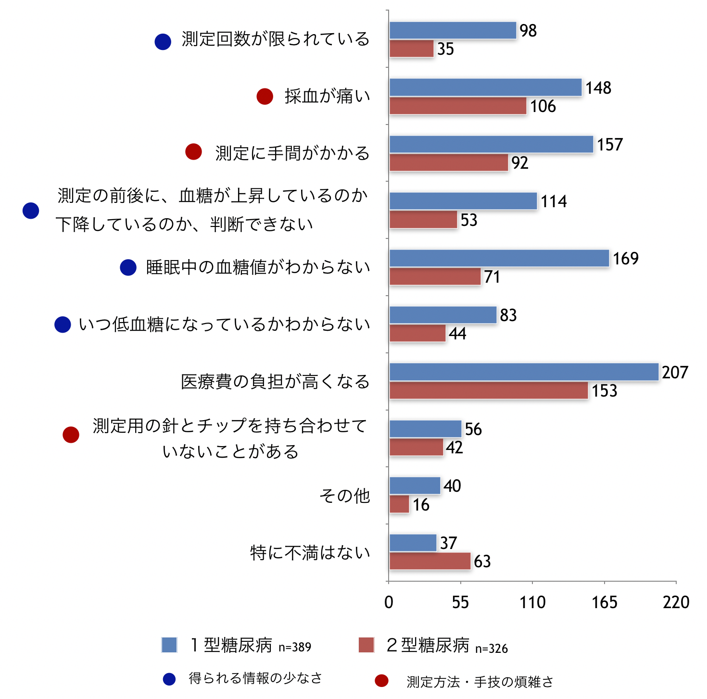
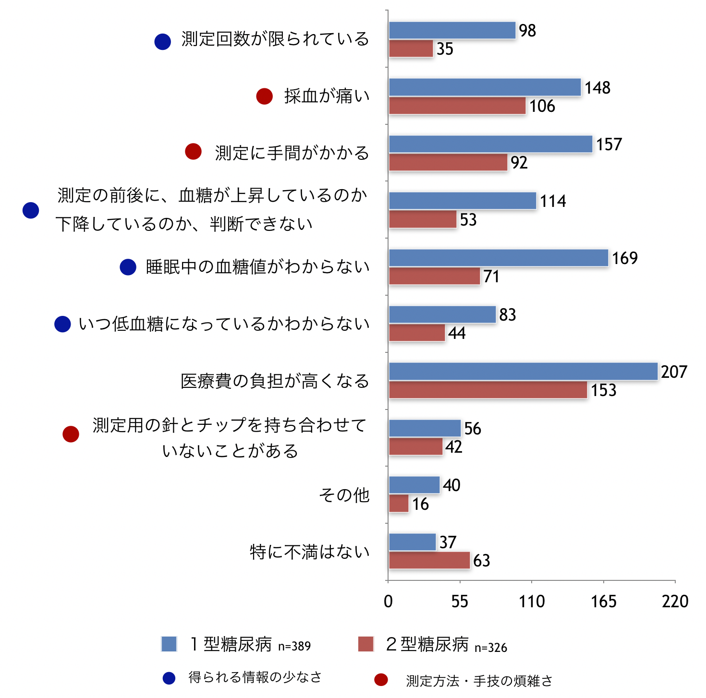
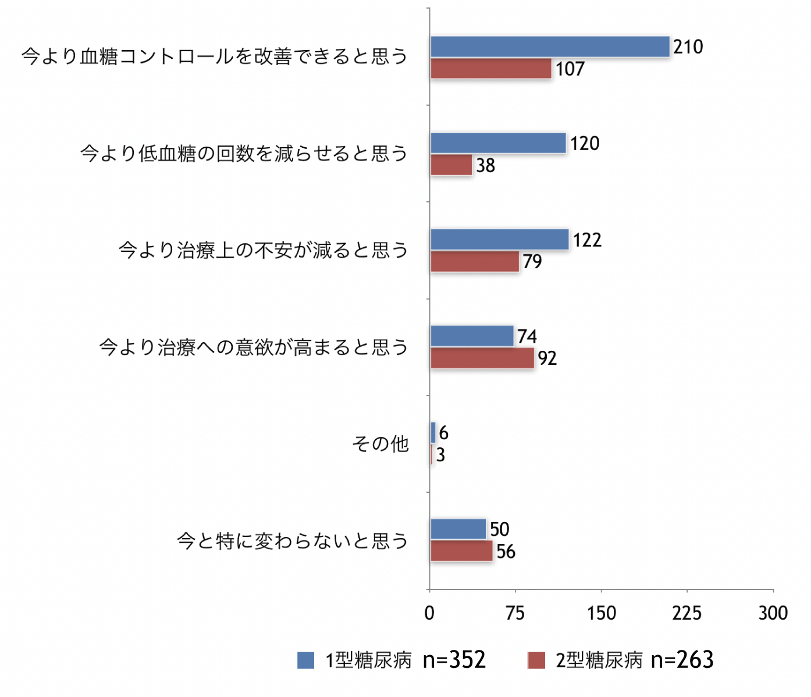
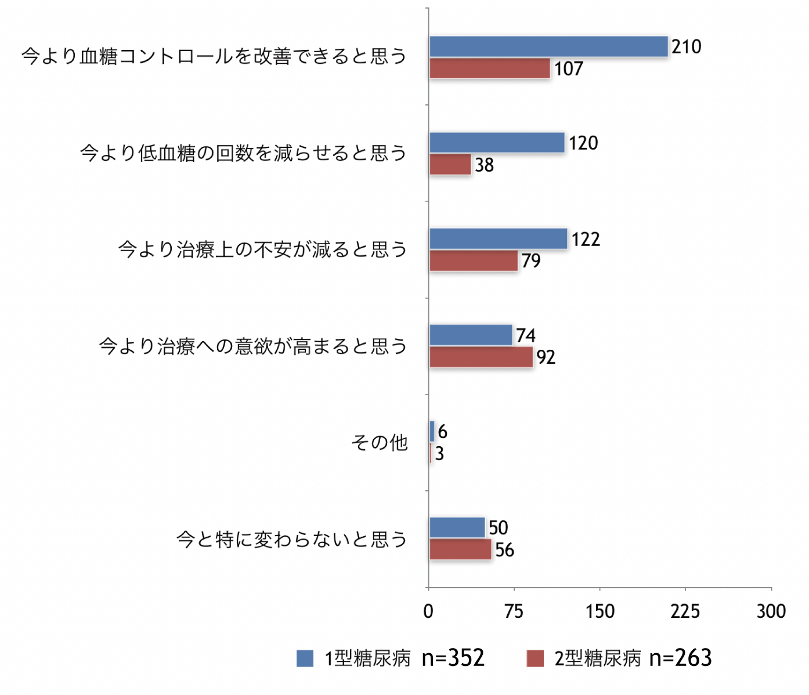
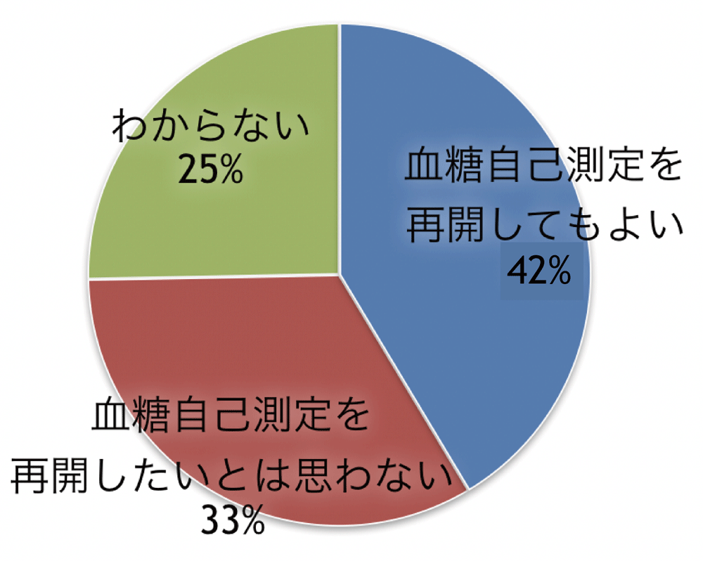
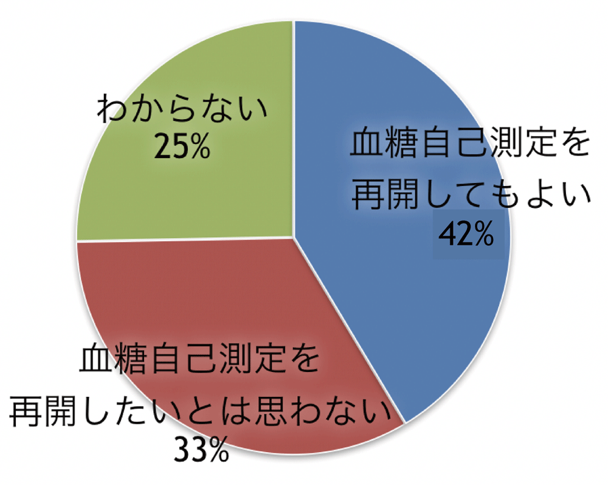

SMBGに感じている不満
以下は、「現在、血糖自己測定を日常的に行っている」方のみへの質問です
現在の血糖自己測定の方法で、不満な点はありますか？
あるとしたらどのようなことですか？ 当てはまるものをすべて選んでください
（n=725 複数回答）  大きく分けて、「測定方法・手技の煩雑さ」「得られる情報の少なさ」に関する不満
あるとしたらどのようなことですか？ 当てはまるものをすべて選んでください
（n=725 複数回答）  大きく分けて、「測定方法・手技の煩雑さ」「得られる情報の少なさ」に関する不満
前問で回答された不満な点が、もし解消されたとしたら、
ご自身の糖尿病治療がどのように変化すると思 いますか？（n＝624 複数回答）  現行のSMBGに対する不満か解消されたら、血糖コントロールを改善可能と考えている患者さんが多数
ご自身の糖尿病治療がどのように変化すると思 いますか？（n＝624 複数回答）  現行のSMBGに対する不満か解消されたら、血糖コントロールを改善可能と考えている患者さんが多数
以下は、「現在はしていないが以前に行っていた時期がある」方のみへの質問です
以前、血糖自己測定をされていたのに現在は行わなくなるまで、
どのような経過をとりましたか？（n=272） 患者さん自身がやめたくなったから、という理由が最多
患者さん自身がやめたくなったから、という理由が最多
どのような経過をとりましたか？（n=272）
患者さん自身がやめたくなったから、という理由が最多
血糖自己測定をやめたくなった理由はどんなことですか？
当てはまるものをすべて選んでください（n=99 複数回答）
当てはまるものをすべて選んでください（n=99 複数回答）
前問で回答された点が、もし解消されたとしたら、
もう一度、血糖自己測定を始めたいと思いますか？（n=99） 
もう一度、血糖自己測定を始めたいと思いますか？（n=99） 
血糖自己測定を煩わしいと感じるのはどんな時ですか？（n=99 複数回答）
糖自己測定について、改善してほしい点など、
あなたのお考えをご自由に記入ください。（一部抜粋）
あなたのお考えをご自由に記入ください。（一部抜粋）
- 治療費が高い1型糖尿病なので頻回の測定になる為、かなり家計に響きます。
- 手間を、極限まで減らしてほしい。包装のゴミが毎回たくさん出るのが面倒。見た目がかわいくないので、やる気がますます出ないので、期間限定でもいいから、かわいい包装にしたりしてほしい。ポンプにくっついている、持続して測れる機械の医療費を安くしてほしい。
- 測定の機械がもっとコンパクトになると嬉しいです。プールに行った時などにケースを出して測定するのは慣れたとはいえ勇気がいります。
- センサーと針の一体化があればいいなぁとおもいます。
- 細かな作業が多いため手指からの採血は出来れば避けたい。欧米で採用されているようなセンサー内蔵方式もしくは外部からの血流測定方式（採血不要型）等でタイムリーに状態観察が出来るようになって欲しい。
- 病院で渡される(協会が作成している？)血糖を記録するための複写式の自己管理ノートでは各食事の前後と就寝前の記録しかできず、はっきり申し上げて時代遅れの気がするし、使いにくい。もっと各自の治療状況や生活に合わせた時間帯や曜日等で区別して記録や分析ができるものがほしい。
- もっと簡単に測定（記録も含め）できるといい。
- ２型糖尿病でも保険対象となるように制度改正すること。
- 血糖測定値で うっかりして測定部位に果糖とか付着した値が出た場合の判断を間違える場合がありますので 果糖などを測定した場合の値を確認したい。
- 測定値は正しいのか不明である。
- 穿孔針が痛い（インスリン注射針の数倍痛い）。
- 持ち運びしやすい物、ランセット、センサー、測定器という1セットをもっとコンパクトに。
- 非観血的測定ができるとよい。もっと簡単になるとよい。ポンプと連動して、もっと簡単に分かるようになるとよい。（補正のための測定が減るなど）。
- 血糖センサが高い。センサは使い捨てではなく何回も使えるようになりませんか？
- 採血のために針を刺しても血の出が悪い。冷え性のためとあきらめているが今より微少な血液での測定ができるとうれしい。
- 今の病院で過去は消耗品として支給であったが、個人負担が突然増えて低血糖時に測るためには食前に測らず検査紙を貯める必要がある。
- 1日4回の測定には、指先の負担が大きく、硬くなったり、特に冬場などは指先が荒れて痛みが生じる。
- 自己測定の回数を医師が決めるが 患者に決めさせて欲しい。
- 腕時計のようなものを身に付けて24時間解るようにすること。
- 測定チップがネット購入出来ない、及び高額である。